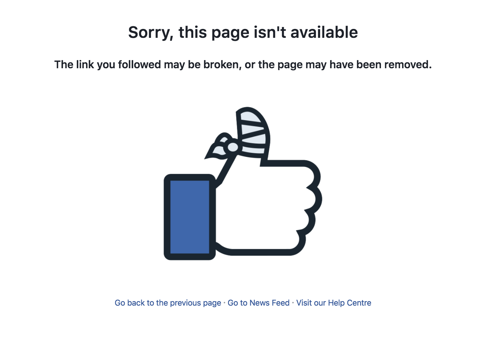

Có bao giờ bạn quan tâm tới một người trên Facebook mà người này đang deactive tài khoản chưa?
Nếu câu trả lời của bạn là có thì tool mình giới thiệu sau đây là dành cho bạn ;)
Xuất phát từ chính nhu cầu của bản thân nên mình đã viết tool này, thực ra là có thêm mấy thằng bạn nữa :)) mục đích vui là chính, nên bạn nào nghiêm túc quá hoặc chuẩn gay quá thì cũng … cứ xem nhé, biết đâu lại tìm thấy niềm vui từ cuộc sống :p
Chuyện là thế này, mấy hôm trước (tính từ thời điểm mình viết bài này - 1-12-2016) đang cuộn vô thức trên Facebook thì thấy một clip tiêu đề khá tò mò “Bây giờ mà gọi điện về cho phụ huynh nói ‘Bố ơi con có thai’ thì sẽ như nào nhỉ?” (ở VN mà nói về mấy đề tài này thì cũng hay ho phết đấy chứ :)) ).
Thế là bấm xem. Chuyện không có gì để nói nếu không có em gái cuối clip dễ thương dễ mến, đoạn nhắc tới bố còn khóc nữa :(
Tính mình dễ cảm động nên nhìn cảnh đó động lòng ghê lắm :’(
Tò mò…
Sau một vài công đoạn tìm kiếm, hỏi han đồng bọn thì cuối cùng cũng ra link.
Nhưng mà …

…hiu… hiu… hiu …
Làm sao giờ? chẳng lẽ ngồi F5 như hồi ĐKMH (đăng kí môn học)?
…
Không! no bao giờ!
Viết tool
Vậy là mình quyết định viết một cái tool nho nhỏ để máy tính hóng giúp mình, sau này có gì còn dùng lại :))
Chọn công nghệ:
Với một app nho nhỏ thì việc sử dụng những module “portable” gọn nhẹ sẽ là sự lựa chọn số một. Điểm qua một số cái tên quen thuộc, mình quyết định chọn mấy em này:
- node js
- express framework
- NeDB database
- SendGrid (mail service)
Nói qua một chút:
Lựa chọn node js vì … nó đơn giản khi viết app nhỏ, cài đặt môi trường node cũng như việc chạy nó không quá khó khăn kể cả khi bạn là một newbie mới chập chững vào nghề. Với node, chỉ một vài dòng code là bạn đã có thể tạo ra một web server chạy hello worl rồi
- Express framework là một cái tên mà chắc hẳn bạn noder nào cũng biết đến, nó dùng để xây dựng những app node mang tính thương mại, có khả năng mở rộng cao. Express cung cấp một khung làm việc giúp các lập trình viên code dễ dàng hơn (routing, middleware, template engine). Express hiện đang là framework đóng vai trò nền tảng lớn nhất cho các framework khác phát triển lên thêm, một vài cái tên nổi nhất là: LoopBack, MEAN, Sails, Feather, … (Mình cũng chưa có cơ hội thử sử dụng mấy framework này, nếu bạn nào đã dùng rồi thì có thể đánh giá và review nhé :D )
- NeDB là một loại database gọn (nhưng không nhẹ), ưu điểm của nó là việc cài đặt rất dễ dàng và cú pháp sử dụng rất quen thuộc (neDB chỉ là một thư viện của node và không có hệ quản trị cơ sở dữ liệu, sử dụng ngôn ngữ truy vấn của MongoDB, các bản ghi được lưu trữ dưới dạng file text), việc của chúng ta chỉ là cài đặt neDB thông qua NPM (npm install nedb), thực hiện vài thao tác config đơn giản và sử dụng
- Sendgrid là một dịch vụ gửi email giá rẻ. Vì Sendgrid có cung cấp một thư viện làm việc trên node nên việc gọi api để gửi mail thông qua Sendgid khá đơn giản. Giống như nedb, mình chỉ việc cài đặt sendgrid thông qua NPM (npm install sendgrid) và sử dụng api thôi :D
Về ý tưởng của viết code:
Mình sẽ tạo một con server hóng fb của đối tượng đang khóa và khi đối tượng active thì nó sẽ gửi mail thông báo cho mình. Việc này giống với việc mình ngồi chờ bấm F5, nhưng khác ở chỗ mình sẽ nhờ con bot làm culi giúp mình hóng

Viết code:
Vì project cá nhân mang hơi hướng vui là chính nên chẳng có security gì cả :)), code rất ngắn (và không dễ hiểu), nên cũng chẳng có gì để giải thích nữa cả, các bạn có thể clone project trên Github về và chạy luôn, hoặc vọc vạch thêm, contribute =))
Demo mình để ở đây:
- http://girl.uetf.me/
Code để ở đây: - https://github.com/minhnt58/hong-gai-fb
Cám ơn các bạn đã theo dõi đến dòng này :D
Để cảm ơn mình dẫn link clip nhé :))
ps: Cám ơn author Tú Trần đã viết giúp mình module crawler facebook và giao diện tử tế nhé :))